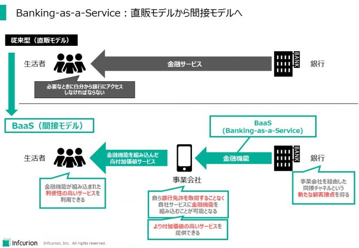

社会が否応ない急激な変化にさらされた２０２０年。そんな中、フィンテックは多くの人の暮らしや日本経済の在り方に密接に関わっていたことが印象的だった一年でした。
ちょうど一年前の２０１９年振り返り記事では「フィンテックはいまや日本経済の一大トピック」「黎明期を脱し、市場変革の大きな力を見せつけ始めた」と書きました。２０２０年はそんな印象が現実のものとなり力強く躍動していった感があります。インフキュリオンが選んだ１０大ニュースで振り返りたいと思います。
目次
消費と金融のデジタルシフト
新型ウイルスの拡大防止のため、多くの国では市民の外出や店舗の営業を制限する施策を導入しました。国によって制限の範囲や罰則の有無などには濃淡がありますが、経済活動が世界的に大きく落ち込んだことは間違いありません。生活者の行動も大きく変化しましたが、フィンテックへの影響として重要なのは買い物行動そして金融サービス利用の変化です。
４月上旬から約２か月の外出自粛要請期間、店舗を訪れて買い物をする場面は激減しました。当社が独自に外出自粛期間における買い物行動の変化を調査したところ、「買い物行動に変化があった」と回答した消費者は44％に上り、多くの消費者がネット経由でのオンラインショッピングや宅配サービスを初めて利用したり利用を増やしたりしたことがわかりました。
緊急事態宣言が解除されたのちも感染拡大防止のための行動変化は定着。１２月に実施した最新調査でも「直近１年間における買い物行動の変化」について調べたところ、「オンラインショッピングでの食材の注文」、「書籍をオンラインで購入」、「スマートフォンアプリやパソコンで料理の宅配や出前を注文」を初めて利用または利用を増やした人は10%を超えています。
ネット経由での買い物での決済はキャッシュレス化します。これまであまりキャッシュレス決済に関心を持たなかった消費者の中にも、キャッシュレス決済を実際に利用し利便性を体感したという人も多かったことでしょう。キャッシュレス決済はフィンテックへのユーザー流入の重要な経路。消費行動のデジタルシフトによってフィンテック利用の素地が大きく拡大したと見ています。
フィンテック利用の素地拡大にもっと直接的に繋がっているのが金融デジタルチャネル利用、つまりスマホアプリやブラウザ経由での金融サービス利用です。こちらも当社独自調査から、外出自粛期間中にデジタルチャネルで「銀行口座の残高や明細の確認」という「参照系」のサービスを初めて利用したり利用を増やしたりした人は約15%、「銀行口座からの振込・振替」という「更新系」のサービスが続き、「決済アプリでプリペイド残高を送金」も約11%の人が利用増となりました。１２月に実施した調査でも同様の行動変化が確認できています。
国際比較において金融デジタルチャネルの利用が進んでいない日本。例えばKPMGの「Mobile Banking 2015」ではモバイルバンキング普及で調査対象１８か国の最下位は日本。ゆうちょ財団の報告書によると個人向けインターネットバンキングの契約率は都銀において46%、地方銀行で11%。第二地方銀行や信用金庫では10%にも達していません。こうした状況では、フィンテックは「一部の高リテラシー層向けサービス」からの脱却は難しいといえます。だからこそ、金融デジタル利用の急増はフィンテックの発展にとって大きなプラスとなったはずです。
さらに重要なポイントがあります。こうした金融デジタルチャネルの新規利用者は若年層ばかりではないということです。構成比率としては２０代・３０代が確かに大きくなっていますが、圧倒的というわけではありません。そして、５０才以上の層が新規利用者の３割弱を占めています。従来は金融デジタルチャネルやフィンテックの利用から距離を置いていた高年齢層ですが、外出自粛をきっかけとして新たなユーザー層として流入していることがわかりました。
この現象は新型コロナ禍における諸外国でも見られる傾向です。例えば米国PayPalでも、新規ユーザーのうち５０才以上がかなり高くなったため、この層に「シルバーテック層」という名を付けました。
消費と金融のデジタルシフトは、デジタルサービス利用に慣れていない層にも及んでいます。フィンテックの新ユーザーとして定着させていくことが２０２１年の重要な取り組みとなりますが、それには従来にもましてわかりやすく心地よいUX（ユーザー体験）の提供がカギになっていきます。
勢いづいた行政ＤＸ、その中核には決済と金流
日本の成長戦略の柱は「グリーン」そして「デジタル」。１１月には経団連、１２月には菅首相が発表したとおり、デジタルインフラ整備とデジタルサービス活用が政策の中心に位置づけられました。行政デジタルトランスフォーメーション（DX）を勢いよく進めていく方針で、２０２１年秋に開始予定のデジタル庁、マイナンバーカードの活用、各種申請等のペーパーレス化と押印廃止、キャッシュレス決済の活用が重要論点となっています。
その契機となったのは新型コロナ禍における経済支援の一環として打ち出された特別定額給付金。住民基本台帳に基づいて一律に1人あたり現金10万円を給付するもので、マイナンバーカードとマイナポータルを用いたオンライン申請方式も採られました。デジタル活用という考え方には何の問題もなかったはずですが、全国の自治体のオペレーションとの乖離は大きく、現場の業務負荷の増大を招いてしまいました。オンライン申請の停止や給付の遅れなどが大きく報道されました。
経済刺激策にAlipayやWeChat Payでのオンラインクーポン配布を活用した中国や、フィンテックアプリ経由での申請と給付金の受領が可能だった米国など諸外国の取り組みと比較しても、デジタルサービス活用に遅れのあることは否定できません。
かといって、既に広く普及している民間サービスを行政サービスでも活用するという視点が全くなかったわけではなりません。アジャイル開発やオープンデータを駆使した東京都の新型コロナウイルス感染症対策サイトは感染拡大初期の３月時点から自治体DXの先進事例として高い評価を得ました。厚生労働省はLINEとの提携による「新型コロナ対策のための全国調査」を実施することで全国規模の迅速な実態調査を行っていました。
マイナンバーカード普及促進についても、コロナ禍以前から計画されていたマイナポイント事業が予定どおり９月から受付開始。キャッシュレス決済で買い物やチャージをした場合、利用額の２５％（最大５０００円相当）を付与する事業で、１１月時点で既に９４０万人が申し込んでいます。事業は２０２１年３月終了の予定でしたが、９月まで延長する方針とのことです。
行政だけでなく、DXは多様な業種や分野で大きな論点となっています。単にハコやドキュメントを作って終わりではなく、利用者を含むステークホルダーの行動変革まで実現しなければ成功の果実は得られないという難易度の高い取り組みですが、先送りしても何のいいこともありません。
マイナンバーカードに代表されるデジタルIDの整備、ペーパーレス化と同時に進行する業務の電子化とデータ蓄積、キャッシュレス化による決済と金流のデジタル化はフィンテックの高度化とさらなる普及の土台となるもの。むしろ行政DXが進むにつれ、フィンテックも市民生活を支えるインフラという公共的側面を強めていくことでしょう。
中国や米国で経済刺激策にフィンテックが活用された背景には、政府・自治体と市民の間での情報とお金のやりとりするチャネルとしての信頼感があったといえます。逆に日本においては残念ながらそこまでの信頼感には到達できていませんでした。行政と社会のDXの進展に期待しています。
関連記事：
- 「業界団体が続々と平井デジタル担当大臣詣で――Fintech、ブロックチェーンも」、ITmediaビジネスONLINE、２０２０年１０月１日
キャッシュレス決済が中小店舗へ本格普及
筆者の実感として、２０２０年はキャッシュレス決済が中小店舗で大きな広がりを見せたと感じます。たとえば、近所の小さなお弁当屋さんやカフェ。現金払いのみだったものが、「PayPay」などコード決済やカード決済が導入されたところが目に付きます。
これはやはり２０１９年１０月からの「キャッシュレス消費者還元事業」のおかげといえます。キャッシュレス決済があまり普及していなかった中小事業者を対象とするもので、経済産業省の公表資料によると事業終了間際の２０２０年６月２１日時点で約115万店が加盟登録、、３月１６日までの期間中に対象となった決済金額は7.2兆円、約2980億円が消費者に還元されました。
キャッシュレス決済の加盟が拡大していくことは喜ばしいですが、中小事業者はせっかく導入したキャッシュレス決済のプラス効果を実感してくれているのでしょうか。興味深い調査結果をキャッシュレス推進協議会が公表しています。２０１９年度の「消費者・事業者インサイト調査」のうち、キャッシュレス決済導入企業１０社へのインタビューによる「事業者インサイト調査」です。キャッシュレス導入効果の捉え方には業者によってばらつきがあるとしつつも、「客単価の向上効果はなかった」、「キャッシュレスしたからといって売上が伸びることもなければ、客単価が増えるわけでもない」といった衝撃的な発言が取り上げられています。キャッシュレス決済のメリットとして挙げられることの多い「売上増」「客単価向上」が導入企業に実感されないとしたらそれは大きな問題です。
しかしこの調査には別の、重要な示唆が含まれています。「キャッシュレス決済を導入した結果、現場のオペレーションが楽になった」という声です。現金利用が減ると、現金関連作業が減ります。売上増よりもこうした業務負荷軽減のほうがメリットとしてわかりやすいということです。キャッシュレス決済を起点とする中小事業者へのビジネス支援サービスには大きなポテンシャルがありそうです。
コード決済の普及にはさらに別の課題が潜んでいました。店舗提示型コード決済（MPM方式）では、決済事業者ごとのコード表示が必要となり、店舗レジ周囲に多数のQRコードがベタベタ貼りだされてしまうのです。レジ周辺のスペースを有効活用できないだけでなく、消費者が混乱し決済UXが低下するという問題を引き起こしてしまいます。
そうした「コード乱立問題」への懸念は解消に向かい始めました。統一QRコード「JPQR」の本格普及が始まったおかげです。総務省も普及事業に取り組んでいます。キャッシュレス決済のさらなる普及のため、こうした業界標準への取り組みは決済UX向上に大きく寄与するもので、２０２０年の大きなプラス成果として記録しておきたいと思います。
店舗QRコードの統一はタイ、マレーシア、シンガポール、インドネシアなど多くの新興国でも中央銀行や政府の主導で進めされています。
API連携の新ビジネスモデル・BaaSが始動
上の「消費と金融のデジタルシフト」では金融デジタルチャネル利用の広がりについて述べました。喜ばしいことですが、銀行など金融事業者（以下、まとめて「銀行」と書きます）においてはデジタルチャネルも従来チャネルと同じ課題を抱えています。ユーザー自身が自分からアプリにログインしたり店舗やATMを訪れたりしなければならない点、つまりユーザーのほうから銀行が用意したチャネルにアクセスしなければならないという点です。「直販モデル」と筆者は呼んでいます。事業者の管理下でサービスを受けられるという点は安心に繋がりますが、生活者の日常行動から自然にアクセスするような導線にはなっていない点、そして日常的・継続的な接点となる要素にも極めて乏しい点が問題です。
そんな直販モデル依存から脱却するために登場したのが「API型リテールバンキング」ともいえるBanking-as-a-Serviceというサービス形態。「BaaS」と略されます。これは、銀行がユーザーに直接サービス提供するのではなく、ユーザーが普段から利用している異業種サービスの中に金融サービスをAPI経由で組み込むことで、事業者を経由した間接的なサービス提供を実現するのが特徴で、筆者はこれを「間接モデル」と呼んでいます。
APIとはApplication Programming Interfaceの略で、複数のプログラムを連携して一体的に動かすための技術です。企業間連携で用いると、異なる事業者のサービスをあたかもひとつのサービスであるかのような使用感をユーザーに提供することができるようになります。

Banking-as-a-Service (BaaS)：直販モデルから間接モデルへ
BaaSによる「間接モデル」においては、銀行・事業会社・生活者それぞれにメリットがあります。
- 銀行は、事業会社を経由した間接チャネルという新たな顧客接点を得られる
- 事業会社は、自ら銀行免許を取得することなく自社サービスに金融機能を組み込むことが可能になり、より付加価値の高いサービスをユーザーに提供することができる
- 生活者（ユーザー）は、金融機能が組み込まれた、利便性の高いサービスを利用できる
特に銀行にとっては、大規模なユーザー基盤を持った事業者へのBaaS提供によって、自力ではアクセスすることもできなかった多くのユーザーを獲得することが可能になります。
BaaSを実現するには銀行が事業会社にAPIを開放することが前提となりますが、2018年にスタートした「電子決済等代行業」の制度のおかげで、都銀・地銀・第二地銀の多くでは個人口座の参照と資金移動のためのAPIが既に整備されています。APIという技術を用いたビジネス形態はまだ国内金融業界に定着していませんが、BaaSという新たなビジネス形態に活用されてゆくトレンドは既に見えてきています。
海外事例についてはこちらの記事で紹介していますが、日本国内でもBaaSへの取り組みは着実に進んでいます。新生銀行グループの「BANKIT」（当社も認証や決済処理等を管理するAPI基盤の提供で協力）、そして住信SBIネット銀行と日本航空による「JAL NEOBANK」といった事例が出てきています。次に挙げる新仲介法制とも相まって、間接モデルによる金融サービス提供は今後拡大していくと見ています。
金融の利用チャネルを広げる新仲介法制が成立
ユーザーが日常的に利用している生活サービスに金融サービスを組み込むことで実現される「間接モデル」。銀行オープンAPI やBaaSプラットフォームなど技術要素の整備は進んでおりサービス提供も始動していますが、「間接モデル」の対象範囲を広げその利便性をより高めることを目的とした法案が２０２０年６月に国会にて成立しました。改正法は「金融商品販売法」を改称し「金融サービス提供法」とし、新たな「金融サービス仲介業」を新設したのです。
現行制度では、事業者が金融サービスを仲介するためには「銀行代理業」、「金融商品仲介業」、「保険募集人／仲立人」といった業態ごとの登録が必要で、かつ特定の金融機関に「所属」してその指導を受けることが必要です。多様な金融サービスをワンストップで提供するような形態は想定されておらず、「間接モデル」としてはかなり限定的なもののみが可能となっていました。
新しい金融サービス仲介業の制度では業種毎の登録は不要となっており、一度登録するだけで銀行・保険・証券などすべての対象分野での仲介が可能となりました。また、特定金融機関からの指導を受けることなく、業務上のパートナーとして提携金融機関と連携する立場として位置づけが変更されています。
金融サービス仲介業者は、ユーザーに対して提携金融機関のサービスを紹介し取引の成立に尽力するようなかたちでの勧誘を行うことができるようになります。イメージとしては、自社ユーザーの属性や行動データを元に、おすすめの金融商品／サービスの申込をスムースに行えるようなユーザー体験の提供が可能となると思われます（具体的なルールは改正法に基づく認定業界団体にて議論される予定です）。
ユーザーは金融サービス仲介業者を経由して、自分にあった金融商品／サービスのワンストップで提供してもらえるようになりますが、その申込や契約は金融機関と直接のやりとりで行う必要があります（金融サービス仲介業者には契約まで代理で行う権限はありません）。シームレスで心地よいユーザー体験の提供がキモとなりますが、それを実現する上での金融サービス仲介業者と金融機関の分担の在り方（管轄範囲、インセンティブ、など）は今後の論点となってゆくと思われます。
金融サービス提供法は公布から１年６か月以内に施行されることになっています。２０２１年内に始まることになる新制度には大きな関心が寄せられています。
関連情報
- 「金融サービスの利用者の利便の向上及び保護を図るための金融商品の販売等に関する法律等の一部を改正する法律案 説明資料」、金融庁、２０２０年３月
- 「「金融サービス仲介業」がもたらす新たなビジネス機会」、インフキュリオン・インサイト、２０２０年６月１日
- 「金融サービス仲介、資金移動の改正法、成立」、大和総研、２０２０年７月２日
送金と決済の手数料に脚光 インフラの在り方が論点に
日本の銀行振込は安全・確実でほぼリアルタイムという高い利便性を誇っていますが、２０２０年はその手数料の在り方に注目が集まりました。議論は手数料の妥当性に留まらず、サービスを支えるインフラの在り方にまで発展、「全銀Lite（仮称）」の構想まで飛び出しています。４０年間変わらずにお金の流れを支えてきたシステムに変化が訪れています。
発端は公正取引委員会が４月に公表したレポート。「QRコード等を用いたキャッシュレス決済に関する実態調査報告書」と題された約７０頁のドキュメントには題名のとおりQRコード決済などキャッシュレス決済に関与している事業者間のお金の流れや手数料水準など、あまり知られていない情報がまとめられています。ユーザーからのプリペイド入金（チャージ）を受け付けるとき、そしてユーザーがキャッシュレス決済で買い物をした代金を加盟店へ支払うとき、サービスの背後でお金が動きます。それは実際には銀行口座間の送金となるため、その手数料の妥当性にも公正取引委員会が注目したわけです。
結論は、銀行間振込の手数料についてはその妥当性に疑問がある、とするものでした。銀行振込は「一般社団法人 全国銀行資金決済ネットワーク（通称：全銀ネット）」が運営する「全国銀行データ通信システム（通称：全銀システム）」で実現されていますが、問題はその手数料。振込1件あたりで割るとシステム運営にかかる費用はごくわずかのはずですが、送金側の銀行が受け取り側の銀行に払う「銀行間手数料」が実際の振込手数料の大半を占める構造。そして銀行間手数料は昭和５４年から改訂されず、３万円未満の送金は117円、それ以上は162円で実質的に固定的に運用されていることが公表されたのです。
日本の振込手数料の大部分は銀行間手数料が占めているわけですが、これは日本独特の商習慣。欧米諸外国においては銀行間送金の手数料はシステム運営費用くらいなので、１件あたり数円程度というわたしたちからすると羨ましい水準で運営されています。
この指摘は各方面で注目を集め、７月には首相官邸に設置されている未来投資会議の「成長戦略実行尾計画案」にも「４０年以上不変である銀行間手数料につき、その見直しを図る」と明記されるに至りました。
これを受け、振込手数料の見直しが急速に動き出します。新しい「内国為替制度運営費（仮称）」を軸とする新手数料体系の検討が公表される中、３メガバンクとりそなは独自に個人間送金の引き下げの方向を表明。さらには全銀ネットへのフィンテック事業者の接続や、新インフラ「全銀Lite（仮称）」の構想まで上がってきています。２０２１年には振込手数料改革の具体的な方向性が見えてくるはずですが、新手数料体系が、今まで埋もれていた送金ニーズを掘り起こすようなものであるよう期待します。
カード決済の加盟店手数料でも動きがあります。２０１９年９月からの経産省「キャッシュレス消費者還元事業」では決済サービス事業者は加盟店手数料の上限に従うことが求められていました。２０２０年６月の事業終了で手数料上限も廃止となりますが、経産省としては中小事業者のキャッシュレス化は今後も拡大させたい意向。手数料規制まで踏み込むことは難しいですが、２０２０年６月に公表した「キャッシュレス決済事業者の中小店舗向け開示ガイドライン」にて手数料水準などの情報開示を求めています。
サービス提供にあたって事業者が適正な水準の手数料を貰うことは当然ですが、技術革新や生活様式の変化、そしてフィンテックによる金融サービス利用の拡大といった様々な流れに合わせ、「何が適正なのか」という考え方も変わっていくものです。２０２０年の議論が、今後のフィンテックの発展の土台となっていくことを期待します。
日本版・中銀デジタル通貨CBDCの検討加速
年初の記事「２０２０年フィンテックを見通す１０のキーワード」でも取り上げた「中銀デジタル通貨」。読みどおり、２０２０年の注目ワードのひとつとなりましたが、今ではその英文略称CBDC（Central Bank Digital Currency）のほうが通りが良いようです。欧米や日本の中央銀行も共同研究やレポート発行など活発な動きを見せましたが、カンボジアとバハマが世界に先んじてCBDCの正式発行を開始しました。
正式発行には至っていませんが、主要国で最初に正式発行に至ると目されているのが中国。２０２０年には実証実験を重ねており、２０２１年には正式発行に至るのではないかと思われます。米国主導の世界秩序への対抗策のひとつと位置付ける論考が多いですが、筆者としてはキャッシュレス化が進みすぎた国内事情も大きいのではないかと考えます。Alipay、WeChat Payといった民間の巨大決済サービスが現金利用を急減させてしまっている現在では、事業者におけるシステム障害等でサービスが停止した場合のリスクが大きくなっています。ひごろ使わない現金を求めて消費者が銀行等に殺到する可能性がありますが、現金の運搬・供給の速度には限度があります。そうした場合に、CBDCであれば急速な「法定通貨」への需要の高まりにも対処できるのではないでしょうか。いずれにせよ、中国が世界のCBDC関連動向を牽引していることに変わりはありません。
CBDCの発行形態に関してもより具体的な情報が出てきました。英イングランド銀行は報告書にて「単層型（single-tier）」と「二層型（two-tier）」の２形態について考察。前者は中央銀行が市民に直接CBDCを発行する形態で、中央銀行がプリペイドサービスのイシュアになるようなイメージです。後者は中銀は銀行にCBDCを発行し、市民は銀行サービスの一環としてCBDCを利用するという形態。中央銀行のコア業務との親和性や民間銀行との役割分担の面で、イングランド銀行は後者の方針をとる方向ですが、これは日本銀行など各国の中央銀行も採用する方向です。
日本銀行の公式スタンスは「デジタル通貨を発行する計画ははないが、調査はしている」というもの。７月に公表した「中銀デジタル通貨が現金同等の機能を持つための技術的課題」というレポートでは、デジタル通貨について「通信や電⼒等のインフラに依存せず、災害等の⾮常時も含めいつでも利⽤可能」と指摘したことから、災害時のキャッシュレス決済手段としての役割を期待していることがわかります。サーバーへの通信を前提としないのであれば、デジタル通貨の価値を端末自体に保有させるような機能が必要になりますが、こうした具体的な仕様は２０２１年度に予定されている実証実験を通して明らかになっていくと思われます。
地域通貨とデジタル商品券の広がり
「デジタル円」については上で紹介したとおり「発行の計画はない」ということですが、自治体レベルでの地域通貨や商品券のデジタル発行は事例が増えました。コロナ禍における地域経済の刺激策と位置付けられ、報道によると２０２０年度には２０以上の自治体で新たに導入される見通しです。
「地域通貨」は実際には自治体や商工会議所、金融機関が発行するプリペイドサービスという形態をとることが多く、例えば飛騨信用組合の「さるぼぼコイン」、宮崎県・川南町の「TORON」、静岡県・西伊豆町の「サンセットコイン」などがあります。２０２１年には世田谷区も「せたがやPay」を発行する予定です。こうした地域通貨の発行・運営の支援に多数のプラットフォーム事業者も参入してきており、今後も地域独自の取り組み事例は増えていく見込みです。
デジタル商品券は従来の紙の商品券と併用されることもあります。紙の商品券よりも運用業務を効率化できる点、額面未満でも利用できる（残高が残り、別の機会に利用できる）点などで優れています。とはいえ、紙の商品券のほうがよいという市民も一定数いますので、自治体としては紙とデジタルのバランスについて考える必要があります。例えば八王子市では１１月に発行した商品券の８割はデジタル商品券とするという方式を取りました。
自治体独自のキャッシュバック施策を、大手決済事業者と提携して実施するという事例も出てきています。例えば神奈川県相模原市が２０２１年１月から実施する「39（サンキュー）キャンペーン」は、Pay Payとau PAYの決済で決済額の最大25%が戻ってくるというもの。なお、相模原市では２０２０年秋にもキャッシュバックキャンペーンを実施しましたが、その際はユーザーが領収書を貼った申請書を役所に郵送するという方式。運用負荷を考えると繰り返しの実施は難しいという判断から、大手決済事業者との提携に至ったのではないかと想像します。特定事業者との提携はユーザーの網羅性が悩ましい課題ですが、今後増えていく形態なのではないかと考えます。
事業ツールとしての法人カード登場
個人事業主や中小事業者も含めた事業者向けカードをここでは「法人カード」と呼ぶことにします。従来は法人カードといえば従業員の出張旅費や接待費の決済に利用するようなイメージがあります。従業員による立替えを不要にし、経費精算業務を効率化できるメリットが考えられます。事業ツールというよりは細かな付随業務を効率化しているイメージでした。
事業に直結した仕入れや購買において法人カードを利用するにはいくつかの課題があります。クレジットカードの場合は利用限度額。個人と同じような数十万円の枠では足りないことも多々ありますが、個人事業主や小規模法人に対してそれ以上の与信は難しいという面もあります。デビットやプリペイドなら与信不要ですが、決済用資金を口座に入れておける余裕のある事業者ばかりではありません。
こうした事業性の決済ニーズに対応した法人カードが最近登場しました。海外では、大手PSPであるSquareが2019年から自社の加盟店向けに発行している「Squareカード」。加盟店のカード売上はSquareが管理しており、定期的に加盟店の銀行口座へ入金していますが、そこにはタイムラグや手間が発生していまいます。「Squareカード」を使えば、未入金の売上をデビットカード決済の原資として利用できるのです。加盟店という事業者の業務負担を軽減できる、ビジネスサービスとしての法人カードの走りだといえます。（詳細はこちら：「事業用カードのファンディングソース」）
このような、ビジネスサービスとして法人カードを活用する動きが日本でも始まりました。カード売上を決済に利用できる「売上連動型ビジネスカード」である「Cycle by GMO」は２０２０年夏に開始。経費精算向けではクラウドキャストの「Staple」が拡大しており、Handiiは何枚でもバーチャル発行な従業員向けプリペイド「paild（ペイルド）」の提供を8月から開始しています。
決済を起点に事業者のビジネスを支援する、そんな新しい法人カードが登場した年でした。当社も事業者向けVisa発行プラットフォーム「Xard（エクサード）」で新たなビジネスサービスを提供していく方針です。事例とした挙げた「Staple」も「Xard」を活用して実現されています。
不正送金 新型サービスが標的
２０１８年は仮想通貨流出事件、２０１９年は大手コンビニのコード決済での情報セキュリティ事件が注目を集めました。２０２０年も残念ながらフィンテック領域での大きな事件が起こりました。銀行口座からキャッシュレス決済サービスへのへの不正送金事件です。ゆうちょ銀行、NTTドコモといった大手企業のユーザーで被害が発生する事態となりました。
フィンテックが発展していく中、様々な事業者が連携することで新たなお金とデータの流れが生まれています。今回の事件はそんな企業間連携の境界点でのセキュリティの不備を突いたものでした。
情報セキュリティを確保しながら、サービス品質で競争していくことで、フィンテックがますます発展していくよう、わたしたち自身も尽力して参ります。
（番外）新たな提携関係に見る国内フィンテックエコシステムの成長
１０大ニュースとしては取り上げにくいですが、２０２０年はフィンテック企業同士の新たな提携関係が、国内エコシステムの成長を印象づけました。
まず年初には、メルペイによるOrigamiの全株式取得。
秋にはわれわれインフキュリオンがKyashより「Kyash Direct」の事業譲渡を受ける。同事業はその後「Xard（エクサード）」との名称となりました。
「freeeとGMOあおぞらネット銀行の提携し、freee会員向けビジネスローン開始」というのも、法人ユーザー向けフィンテックと新興のネット銀行がそれぞれの強みを活かす関係を築いたようで興味深いです。
個人向け融資プラットフォームのクラウドローンが貯金アプリfinbeeと提携、というニュースもありました。まさにフィンテック内の異業種連携という趣です。


{kind=link}